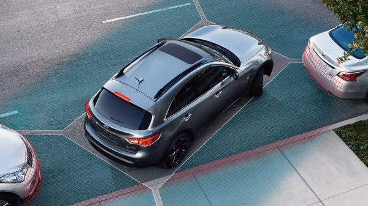

The History of Infiniti
Opening a new division
1985: Brand Evolution
Внутри компании Nissan постепенно формируется специальное подразделение. Основная цель - создание нового бренда высокотехнологичных автомобилей премиум-класса, который бросит вызов широко распространенным американским и европейским люксовым автомобильным брендам, отличаясь от них дизайном, ориентированным на клиента.
Name selected
1987: Evolution of the brand
World, meet Infiniti
1987: Evolution of the brand
INFINITI открывает 51 дилерский центр в Соединенных Штатах Америки и выводит на рынок две модели: полноразмерный седан INFINITI Q45 и спортивное купе INFINITI M30. Благодаря своей дебютной «Программе привилегированного обслуживания» INFINITI быстро завоевывает признание и становится лидером по качеству клиентского сервиса.
Infiniti presents VQ ENGINE
1995: New technologies
Инженеры INFINITI разработали новую серию двигателей V6: серию VQ. Благодаря оптимальному балансу мощности, крутящего момента и расхода топлива двигатели VQ входили в топ-10 лучших двигателей по версии журнала Ward's Auto на протяжении 14 лет. Моторы серии VQ стали предшественниками битурбированного двигателя V6.
Opening of the Infiniti owners club
1987: Evolution of the brand
После десяти лет роста компания открывает "Клуб владельцев автомобилей INFINITI", расширяя «Программу привилегированного обслуживания». Клуб INFINITI предоставляет доступ к специальным условиям, предложениям и эксклюзивным сервисам. Теперь владельцы INFINITI получают еще больше преимуществ, привилегий и комфорта.
Driver-oriented standards
Confidence when reversing
2001: New developments
INFINITI впервые представляет камеру заднего вида Rearview Monitor. Теперь при движении задним ходом информация о ситуации позади автомобиля выводится на цветной дисплей приборной панели.
First voice recognition system
2001: New developments
В 2002 году произошел большой прогресс в развитии мультимедийных технологий. Благодаря системе распознавания голоса INFINITI вы можете управлять настройками автомобиля при помощи голоса, не убирая рук с руля.

Hi-tech
Parking assistance
2001: New developments
INFINITI представляет новую технологию помощи при парковке: первый в мире монитор кругового обзора с передними и задними датчиками парковки и датчиком движения объектов. Теперь при парковке вы можете получить доступ к виртуальному обзору вашего автомобиля сверху на 360° вокруг. При приближении автомобиля к окружающим объектам на небезопасное расстояние система предупредит водителя звуковым сигналом.
Feel the invisible
2010: New developments
Развивая передовые технологии безопасности, INFINITI создает первую в мире систему предотвращения столкновения в "слепой зоне", которая при помощи датчиков, регистрирует автомобили, находящиеся вне поля зрения водителя. Сначала система подает световой и звуковой сигнал, а затем, если это необходимо, применяет торможение.
Come to our showroom for your new Infiniti!